Global team case presentations
Small groups advise a new manager taking over a team spread across time zones and cultures, then present their plan to the room.
Executive education
Team simulations, a global team case, and the research on why groups underperform
79 participants from 14 organizations
I taught this one alone. Day one is a lunar survival simulation: everyone ranks the items alone, then as a team, and we score both against NASA's ranking so the room can see when the group beat its best member and when it didn't. Day two covers collective intelligence, psychological safety, and social loafing. Day three works through goal setting and a case about rebuilding a global team, then uses Hofstede's dimensions to compare the countries in the room.
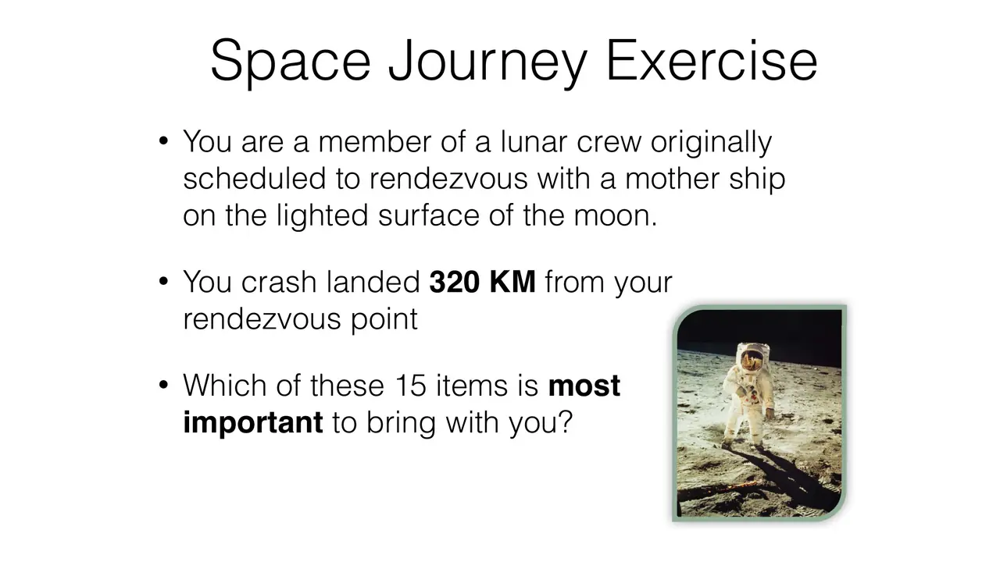
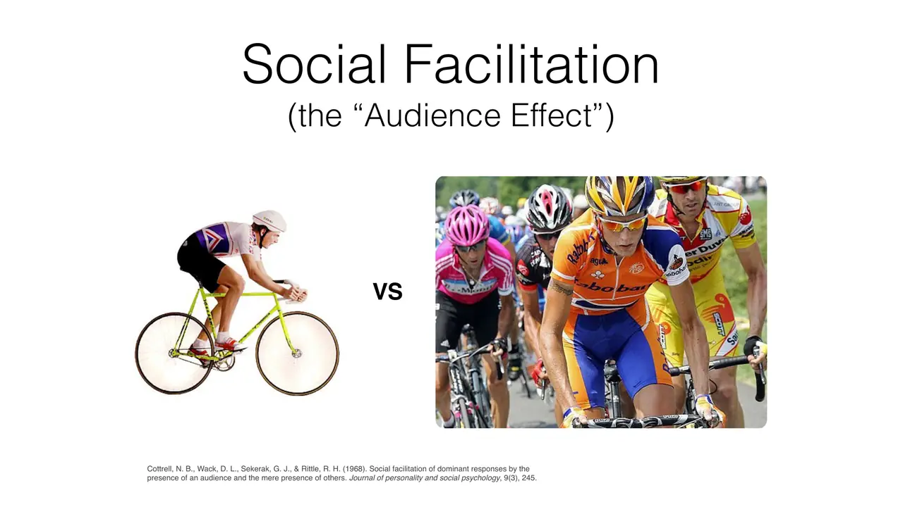
slides from the decks
I taught from
Spring 2015 (February 15 to 17) · Three mornings, 8:00 to 1:00, at CMU-Q
Scroll the schedule and the slides follow along: five from each session, picked from the decks I taught from.

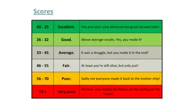
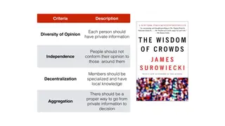
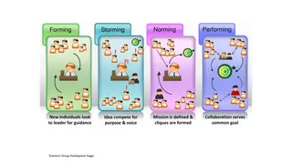

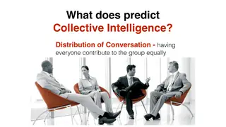

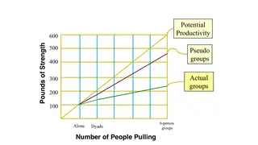
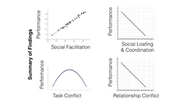
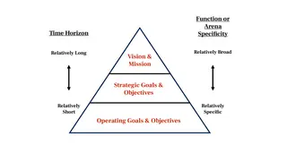
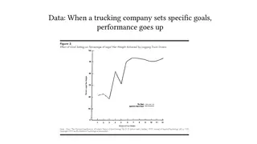

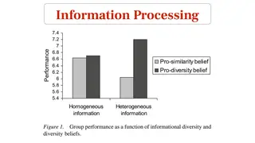
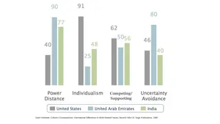
What students hand in
Small groups advise a new manager taking over a team spread across time zones and cultures, then present their plan to the room.
Offerings